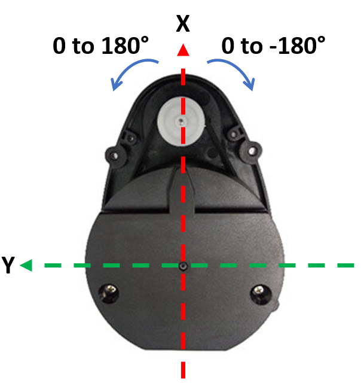
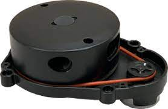

Module 8: LIDAR
Contents
Module 8: LIDAR#
Purpose#
In this lesson we will enable the robot to avoid obstacles. Many sensors provide obstacle avoidance capabilities: camera, sonar, infrared, LIDAR, etc. All of these will work to enable the robot to avoid obstacles, but we will use LIDAR as it is an affordable, but very capable solution.
LIDAR#
Robotis’s LDS-01 is a 360 deg Laser Distance Sensor (LDS). It is based on laser triangulation ranging principles and uses high-speed vision acquisition and processing hardware. It measures distance data in more than 1800 times per second. It has a detection range between .12 m and 3.5 m and an angular resolution of 1 degree. The distance accuracy is .015 m between .12 m and .499 m then +/- 5% up to 3.5 m.

Videos:#
Quick Check on LIDAR Variant#
The robots for our class have two different LIDAR variants. The older bots have the LDS-01 which is exactly what is pictured above. The newer bots likely have the LDS-02 (pictured below). If you have the LDS-02, you will need to go into the .bashrc file and change the last line in the file to indicate the proper variant.

sudo nano ~/.bashrc
You are looking for a line that looks like this:
export LDS_MODEL=LDS-01 # replace with LDS-02 if using new LIDAR
You will need to change that line to LDS-02. You will need to accomplish this on both the master and the robot
Setup#
The hls_lfcd_lds_driver package enables data to be received from the LIDAR over the /scan topic. The package is pre-installed on your Robot, but as always, trust, but verify. Open a new secure shell into your Robot and run the following:
rospack find hls_lfcd_lds_driver
If installed, the command should return the absolute path to the package, similar to:
/opt/ros/noetic/share/hls_lfcd_lds_driver
If the command instead returns an error, then you need to install the package.
sudo apt install ros-noetic-hls-lfcd-lds-driver
Testing LIDAR#
Open a new terminal on the master and run roscore and setup for statistics:
roscore
rosparam set enable_statistics true
Select the terminal with the secure shell connection to your Robot and open the turtlebot3_lidar.launch file:
rosed turtlebot3_bringup turtlebot3_lidar.launch
We can see that this launch file is pretty simple and only launches the hls_laser_publisher node.
Run the launch file on the Robot:
roslaunch turtlebot3_bringup turtlebot3_lidar.launch
In a new terminal on the Master, we can visualize the Turtlebot3 and LIDAR data using another launch file from the Turtlebot3:
roslaunch turtlebot3_bringup turtlebot3_model.launch
This should open an RVIZ window where we can visualize ROS components of our system. In the “Displays” menu on the left you should see two submenus of interest: “LaserScan” and “RobotModel”. These allow us to depict the Turtlebot3 and LIDAR data.
You should see red dots fill the rviz map where obstacles exist.
Investigate what data the hls_laser_publisher is sending. Type the following and observe the command output:
rostopic list
rostopic info /scan
rostopic type /scan
rostopic type /scan | rosmsg show
rostopic echo /scan
At this point you can kill all nodes on the master, but keep the turtlebot3_lidar launch file running on the Robot.
LIDAR Subscriber#
In this section we will build a subscriber that will print the range data from the Turtlebot3 LIDAR.
Browse to a terminal on the Master and create an
ice8package:cd ~/master_ws/src/ece387_master_sp2X-USERNAME/master catkin_create_pkg ice8 rospy sensor_msgs geometry_msgs turtlebot3_bringup cd ~/master_ws catkin_make source ~/.bashrc
Create an lidar node:
roscd ice8/src touch lidar_sub.py
Copy and complete the below code using the GUI editor tool, Atom. Browse to the subscriber you just created and double-click. This will open the file in Atom (if it is open in any other editor, stop, raise your hand, and get help from an instructor)
💡️ Tip: Look for the “TODO” tag which indicates where you should insert your own code.
The code should obtain the list of range data from the LIDAR launch file running on the robot, convert the angles from 0 to 180 degrees and 0 to -180 degrees to 0 to 360 degrees. Lastly, the subscriber will print the average distance of obstacles 30 degrees off the nose of the robot.
#!/usr/bin/env python3
import rospy, math
# TODO: import correct message
# lambda function to convert rad to deg
RAD2DEG = lambda x: ((x)*180./math.pi)
# convert LaserScan degree from -180 - 180 degs to 0 - 360 degs
DEG_CONV = lambda deg: deg + 360 if deg < 0 else deg
class LIDAR:
"""Class to read lidar data from the Turtlebot3 LIDAR"""
def __init__(self):
# TODO: create a subscriber to the scan topic published by the lidar launch file
self.ctrl_c = False
rospy.on_shutdown(self.shutdownhook)
def callback_lidar(self, scan):
if not self.ctrl_c:
degrees = []
ranges = []
# determine how many scans were taken during rotation
count = int(scan.scan_time / scan.time_increment)
for i in range(count):
# using min angle and incr data determine curr angle,
# convert to degrees, convert to 360 scale
degrees.append(int(DEG_CONV(RAD2DEG(scan.angle_min + scan.angle_increment*i))))
rng = scan.ranges[i]
# ensure range values are valid; set to 0 if not
if rng < scan.range_min or rng > scan.range_max:
ranges.append(0.0)
else:
ranges.append(rng)
# python way to iterate two lists at once!
for deg, rng in zip(degrees, ranges):
# TODO: sum and count the ranges 30 degrees off the nose of the robot
# TODO: ensure you don't divide by 0 and print average off the nose
def shutdownhook(self):
print("Shutting down lidar subscriber")
self.ctrl_c = True
if __name__ == '__main__':
rospy.init_node('lidar_sub')
LIDAR()
rospy.spin()
Save, exit, and make the node executable.
Open a new terminal on the Master and run the lidar_sub.py node.
Rotate the Robot and observe the distance off the nose.
Checkpoint#
Once complete, get checked off by an instructor showing the output of your lidar_sub and rqt_graph node.
Summary#
In this lesson you learned how to integrate the LIDAR and get the distance of objects off the nose of the robot using the pre-built LIDAR package. In the lab that corresponds to this lesson you will apply this knowledge to stop the robot a specified distance from an obstacle and turn.
Cleanup#
In each terminal window, close the node by typing ctrl+c. Exit any SSH connections. Shutdown the notebook server by typing ctrl+c within the terminal you ran jupyter-notebook in. Select ‘y’.
Ensure roscore is terminated before moving on to the lab.